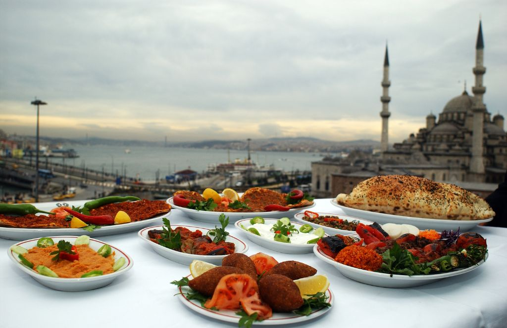

Bosphorus Guide
The Bosphorus is not simply a sightseeing backdrop. It is a working waterway, a transport route and one of the defining landscapes of Istanbul. Choose the way you experience it based on time, privacy and pace.
Four Ways to Experience the Bosphorus
Public Ferry
Practical, affordable and naturally connected to Istanbul's daily rhythm.
Short Cruise
A straightforward option when you want a dedicated sightseeing period on the water.
Waterfront Walk
Ortaköy, Bebek, Üsküdar and other districts offer different views and atmospheres.
Private Boat
A more flexible option when privacy, timing and a tailored route matter.
Sunset
Golden-hour light changes the character of the shoreline and skyline.
Full Experience
Combine water with a private tour, dinner or chauffeur for a complete day.
European or Asian Side?
Neither side is simply “better.” They offer different perspectives. The European shoreline is dense with historic and contemporary landmarks, while the Asian side gives you views back toward the European skyline and a different neighbourhood rhythm.
What to Notice From the Water
- Ottoman-era waterfront mansions
- Palaces and historic waterfront buildings
- Bridges connecting the two continents
- Ferries and everyday maritime traffic
- Changing skyline from Sultanahmet to modern districts
Timing Matters
For fixed plans such as dinner reservations or flights, leave a margin for weather, ferry conditions and traffic before and after your water experience.
Continue Exploring
Planning the practical side?
Our concierge service can help arrange private tours, airport transfers, chauffeur service, restaurant reservations and selected Istanbul experiences around your plans.
Request Concierge →